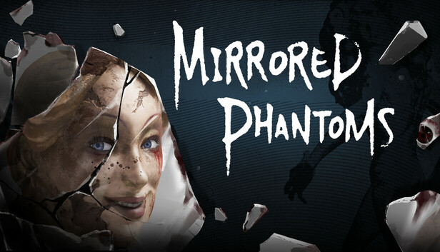

Mirrored Phantoms
Click here to download on Steam!
In Mirrored Phantoms, I composed several key pieces of music, including the main menu theme, enemy stingers, and the credits song. The game’s eerie and unsettling atmosphere is brought to life through its use of electroacoustic elements, which heavily influenced my approach to the soundtrack.
To match the game’s vibe, I incorporated synths and electric instruments into the compositions. These elements were essential in creating the haunting and scary tone that defines the audio experience of Mirrored Phantoms. The result is a soundtrack that heightens the tension and immerses players in the game’s chilling world.
Music from Mirrored Phantoms
Listen to the music from the game:
Main Menu
Confusion Stinger
Detection Stinger
Chase Layer
Choking Stinger
Credits Music